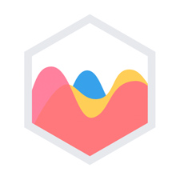
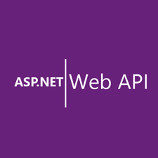
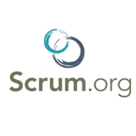

Fullstack .Net Developer
Francisco Arroyo
I'm a Full Stack Web Developer focused on C# for its hardiness, scalability and
interoperability with other systems, I have also worked with PHP,
Angular JS and VB making improvements, migrations and repairs of existing systems. I'm
able to work in teams, remotely or on site.
I love to keep me updated on new hardware and software solutions, either through online
courses,
lectures, attend to webinars, read blogs or classroom courses is always better to know
what new
technologies you can take for your work.
Stack



Courses and Certifications

Timeline
Skill Set
Database Knowledge
Hobbies


Languages


Projects